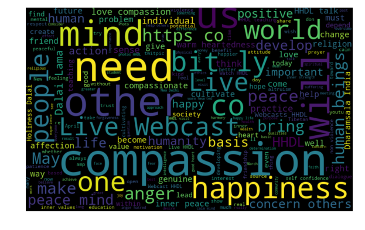
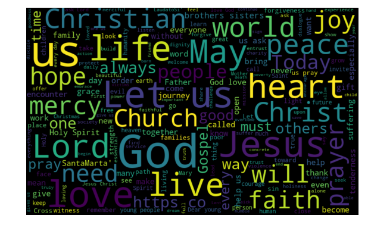

Values and Practices
Values and Practices of Tibetan Buddhism
There are three main branches of Buddhism beliefs following different practices. These branches are Hinayana or Theravada, Mahayana, and Vajrayana. All three of these branch’s practices have the goal of eventually overcoming samsaric activities, Tibetan Buddhism is unique in that it is centered around Vajrayana practices, though Hinayana and Mahayana activities are still observed.In Theravada, teachings consist primarily of karma, and meditation is practiced so that distance from thoughts and feelings that are difficult can be created. It is believed that by following these practices, the practitioner may understand that their thoughts and feelings are not personal, thus allowing them to act in ways in which they will gain positive karma. In Hinayana, the focus is on the self and it is individual attainment of enlightenment that is pursued by the practitioner. Mahayana includes Theravada teachings but also involves compassion for others. Mahayana teaches that the world can be changed by our thoughts, words, and actions. By following Mahayana teachings, the practitioner gains a greater sense of compassion and wisdom. In practicing Mahayana, the practitioner is not only trying to obtain enlightenment but also trying to help others that are trapped in samsara, so that everyone may reach Nirvana.
The last branch is Vajrayana, in which Tibetan Buddhism is built around. In Vajrayana, the teachings are centered on the mind, and the practitioner attempts to overcome their fixations on their ego, attachments, and indifference. Vajrayana is considered to be a much quicker path to attain enlightenment in that unlike Theraveda and Mahayana, techniques are provided. In Vajrayana, the practitioner imagines themselves as having already achieved enlightenment and uses this perception in order to more quickly attain enlightenment. It is believed that the Buddha himself is but a “mirror to our own mind” (“Buddha’s Teachings”). Common Vajrayana practices include meditation, reflection, various rituals, good ethics, and the mind and body.
All branches of Buddhism also follow five moral precepts, which prohibit taking a life, taking what is not given, sexual misconduct, wrong speech such as lying or gossiping and using intoxicants such as drugs or alcohol that clouds the mind.
Appearance of Values and Practices on the Dalai Lama’s Twitter

While none of the branches of Buddhism are mentioned in the Dalai Lama’s tweets, a major theme in many of the tweets by the Dalai Lama is compassion, a major teaching of Theravada; it shows up in 307 of his tweets and these tweets have an average retweet count of 10 thousand and favorite count of 20 thousand. Practices of Buddhism are mentioned to a much lesser amount; meditation shows up in four tweets, reflection in ten. Caring for the mind and body is tweeted about much more often, at 200 times total. Following the morals of Buddhism and being ethical are mentioned in 37 tweets by the Dalai Lama, though the five moral precepts are not mentioned specifically.
Values and Practices of Catholicism
While there are countless practices in Catholicism, there are a few that can be considered main practices. A series of practices or sacraments or taken throughout a Catholic's life, the first of which is Baptism, where a priest who presides over this ritual anoints the person being baptized with oils, after which holy water is poured over their head. It is believed by Catholics that during this process, a person is cleansed of sin. The second sacrament a Catholic undergoes is their first Holy Communion. Communion is a central part of catholicism and takes place at every mass, in which Catholics partake in wine and bread believed to represent the body and blood of Jesus Christ. By taking part in communion Catholics believe they become a part of Jesus and express their union with the catholic church. Confirmation is another important Catholic sacrament, in which a person is accepted as a full-fledged member of the catholic church. The sacrament of Penance takes place periodically throughout a Catholics lifetime. This sacrament has three main parts, the first of which, confession is where sins are confessed to a priest. The second is contrition where you are sorry for your sins, and the third, penance, is where the priest gives you a penance to perform after confessing your sins, after which the priest grants absolution of the catholic sin. Marriage is another Catholic sacrament, in which a couple vows the permanence of their marriage and that they will be faithful and open to children. The last sacrament of a Catholics life is the anointing of the sick. During this ritual, the priest anoints the catholic with holy oil and absolves them of the sins they feel remorse for but have not confessed to. This place can take many times as people can recover from illness.Outside of the sacraments, Catholics also take part in several holidays throughout the year. Some main ones are Christmas, Lent, and Easter. All of these holidays correspond with an important part of Jesus’s life. The first one, Christmas is when Jesus was born. Lent takes place forty days before Easter, and it is during this time that Catholics fast in penance and reflection. Easter celebrates Jesus’s resurrection and gives Catholics hope that they will experience resurrected life in Heaven. Prayer is also a key part of a Catholics life and falls into four types. The first, adoration are prayers praising God, the second, contrition, are prayers asking for forgiveness, Petition is the third, and are when the prayers are asking for a favor. Finally, the fourth is thanksgiving, prayers that show gratitude to God.
Some of the most important values that Catholics try to uphold are the concepts of mercy, forgiveness, and care for others. Believing that everything is created by God, they show their faith by “protect[ing] people and the planet, living [their] faith in relationship with all of God’s creation.” (“Afterlife and Salvation”)
Appearance of Values and Practices on the Pope’s Twitter

The term sacraments are mentioned 16 times by the pope in his tweets and are mostly about celebrating the power and importance of the sacraments, “In the Sacraments we the strength to think and to act according to the Gospel.” Specific sacraments are also frequently mentioned; there are 15 tweets about baptism, 21 about communion, 3 about confirmation, 16 about confession, 1 about penance, 8 about marriage.
Of the holidays previously discussed, the pope has frequently tweeted about them. Christmas is mentioned 19 times, lent 59 times, and easter 17. Fittingly, all mentions of these holidays take place around their respective dates. Interestingly, in spite of lent being mentioned the most often it has the least number of average retweets and favorites at around 7 thousand and 24 thousand respectively, with Christmas being just ahead of it. Tweets about easter are much farther ahead in average retweet counts - 12 thousand, and favorite counts - 47 thousand.
Prayer is mentioned by the pope an exorbitant amount of times, 297, emphasizing it’s importance as a Catholic practice. Values of mercy, forgiveness, and care are also frequently mentioned, at 135 times, 81 times, and 65 times.
Similarities and Differences
Both the pope and the Dalai Lama posted tweets about the major values and practices of their respective religions. Since ethics and morals are part of the Catholic faith also, though not mentioned nearly as often as Buddhism, I decided to see how many times they were mentioned by the pope, finding that they were only mentioned six times. This helps solidify the emphasis that Buddhism as a religion places on these values.